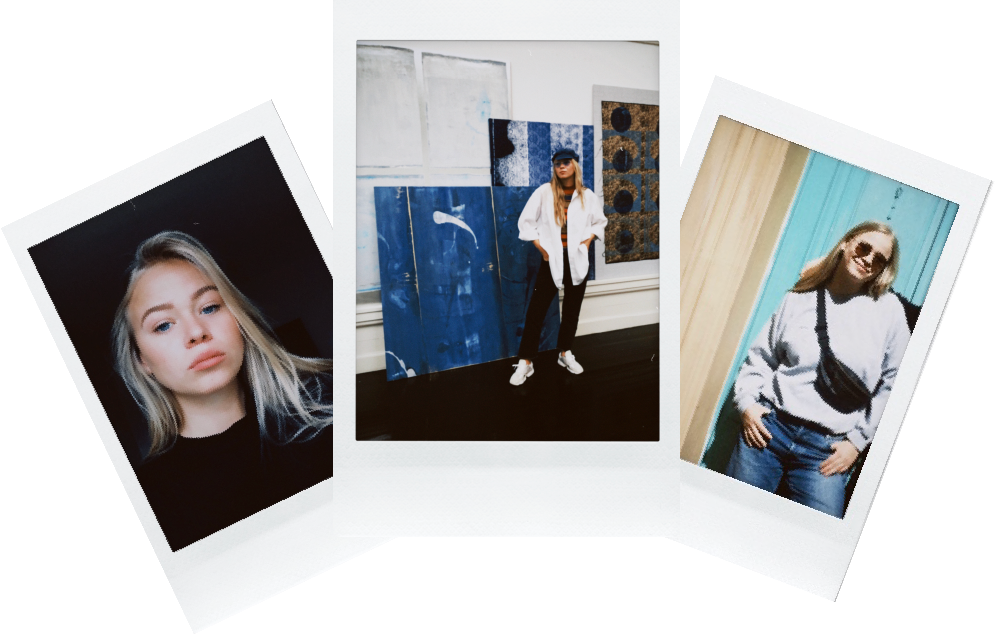

ANNEMARIE HERSAA

Personen bag
Mit navn er Annemarie Emilie Hersaa, og jeg er en ung kvinde på 23 år.
Jeg er i øjeblikket under uddannelse på KEA (Københavns Erhvervs
Akademi) på linjen Multimediedesign 2021.
Jeg interesserer mig for kunst, musik, fotografi og at rejse. Jeg sætter
pris på mine venner, familie, kreativ udfoldelse og god kaffe. I min
fremtid vil jeg gerne ud og rejse verden rundt, og endda også lave noget
freelance arbejde. Gerne hvor jeg kan få lov til at bosætte mig et nyt
sted i verden og prøve kræfter med kreativt arbejde - eksempelvis
webdesign.
CV
Uddannelse
- Svenstrup Efterskole, 2014-2015
- Birkerød Gymnasium, 2015-2018; Linje Engelsk A, Samfundsfag A og Psykologi B
- KEA, 2021; Multimediedesign
Erhvervserfaring
- Rengøringshjælp hos selvstændig bager, 2014
- Børnepasning og lektiehjælp, 2016
- Udbetaling Danmark, 2019; Kunderådgiver
- H&M, 2019; Kasseekspedient, lagerhjælp og rengøring af butik
- Café Alex, 2020; Servitrice, kasseekspedient, åben-og lukkevagt
- Hjerteforeningen 2020-2021; Fundraiser
Frivillig arbejde/højskole
- Højskole i El Salvador, 2018
- Skolelærer i Peru, 2018